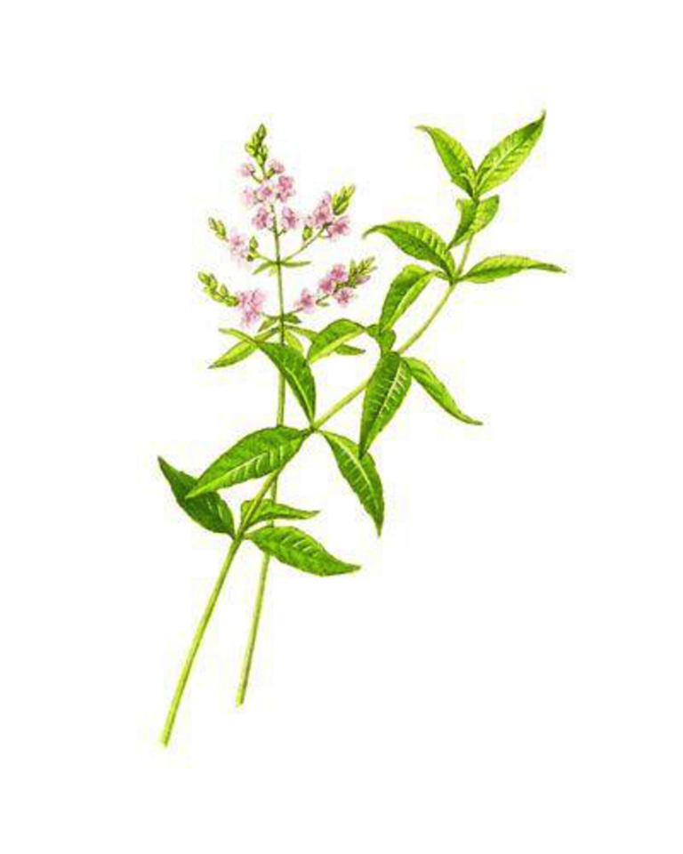
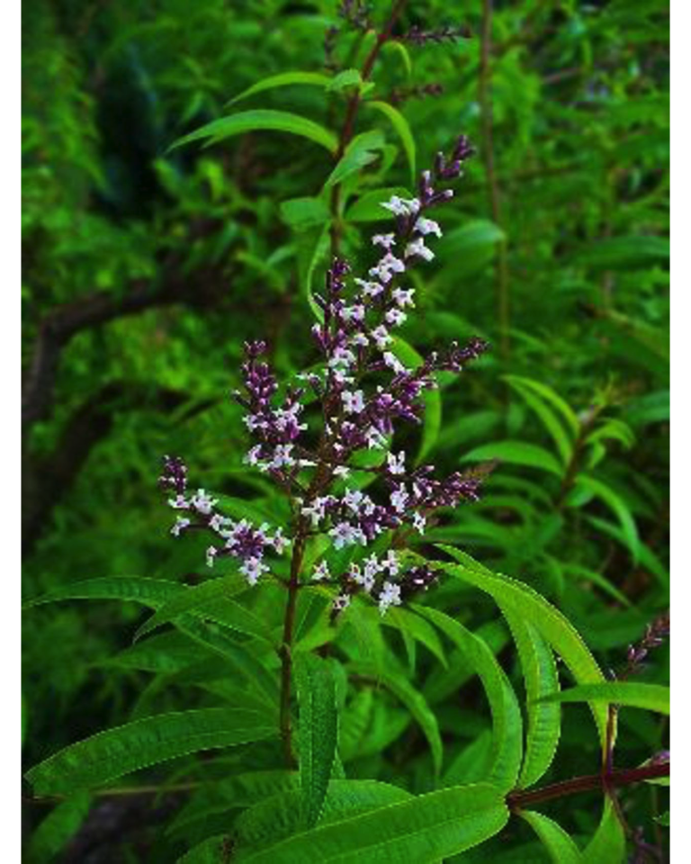

12 Hierba Luisa
12.1 (Lippiacitriodora L.)

Francisco Javier Leyva Jiménez a, Sandra Pimentel Morala,b, Jesús Lozano Sáncheza,b, Mª Elena Alañón Pardoa,b, David Arráez Romána,b, Antonio Segura-Carretero^a, b^
aCentro de Investigación y Desarrollo del Alimento Funcional, Parque Tecnológico de Ciencias de la Salud, Av. del Conocimiento 37, edificio Bioregión, 18016, Granada, España.
bDepartamento de Química Analítica, Facultad de Ciencias, Universidad de Granada, Avd. Fuentenueva s/n, 18071, Granada, España.
Autor para correspondencia: ansegura@ugr.es y darraez@ugr.es
12.2 Características agronómicas
12.2.1 Taxonomía
El género Lippia, pertenece a la familia Verbenaceae, incluyendo unas 200 especies entre hierbas, arbustos y pequeños árboles. Lippiacitriodora, conocida como cedrón o Hierba Luisa, es un arbusto de hoja perenne originario de Sur América que fue introducido en Europa en el siglo XVII y ha sido cultivado en la zona Mediterránea desde entonces (1).

| Familia | Verbenaceae |
|---|---|
| Género | Aloysa / Lippia |
| Especie | Aloysacitriodora |
| Variedad | Paláu |
Es una planta leñosa, que puede alcanzar hasta los 3 metros de altura, con ramas estriadas y escabrosas y sus hojas tienen forma lanceolada de 7 a 10 centímetros con peciolos cortos. Las flores son pequeñas y de color blanco o azul claro, compuestas por pétalos de 4 a 5 milímetros. Además, estas hojas proporcionan un característico aroma a limón, puesto que contienen aceites esenciales en ellas (2).
12.3 Condiciones de cultivo
12.3.0.1 Requerimientos climatológicos
Para su correcto crecimiento necesita un clima templado-cálido, ya que con el frío, las hojas pueden verse afectadas, pudiendo llegar a perderse. La luminosidad favorece la síntesis de su aceite esencial aumentando su porcentaje en las hojas. Sin embargo, la escasa luminosidad hace que se desarrollen hojas más grandes pero con menor contenido fenólico. En cuanto a la humedad, debe ser moderada y el viento no muy excesivo, puesto que provoca evaporación de aceites esenciales(3).
12.3.0.2 Requerimientos del suelo
Las condiciones edafológicas también intervienen en su crecimiento, de este modo, el suelo debe ser poco compacto, permeable y profundo. El pH de la superficie debe ser bajo o neutro (6.5-7.2). Por otro lado, la hidratación no debe ser excesiva, puesto que provoca podredumbre de las raíces (3).
12.3.1 Cuidados y Fertilización
Es necesario realizar deshierbes periódicos que prevendrán la aparición de plagas de araña roja o pulgón. Debe protegerse frente a heladas, a pesar de ser resistente a climas fríos. En cuanto al riego, deberá considerarse en todas las etapas de cultivo, siendo necesario que sea frecuente en verano mientras que en invierno se debe realizar en días sin heladas para evitar dañar a la planta. El tipo de fertilizante empleado debe ensayarse dependiendo del clima, la estación y las condiciones edafológicas para cubrir las necesidades de crecimiento de la planta.
12.3.2 Multiplicación
Dada la dificultad de obtener semillas y su bajo poder germinativo, el procedimiento normal de multiplicación es mediante esquejes, acodos o división de pies. La técnica de cultivo in vitro se puede realizar para para la conservación genotípica y permite la obtención de una gran número de plantas en un espacio reducido y bajo condiciones controladas que evitan la transmisión de enfermedades (3).
| Meses (Hemisferio Norte) | Meses (Hemisferio Sur) | |
|---|---|---|
| Crecimiento flores | Agosto | Febrero |
| Recogida de hojas | Mayo - Noviembre | Noviembre-Mayo |
| Recogida de semillas | Septiembre - Octubre | Marzo - Abril |
12.4 Usos tradicionales
Lippiacitriodora ha sido tradicionalmente usada por sus propiedades medicinales y aromáticas en el Sur de América. Antiguas civilizaciones incas la consumían por sus propiedades digestivas, antiespasmódicas y como remedio para la bronquitis, tos, fiebre y problemas de corazón (4). Además, también es usada para el tratamiento del insomnio y la ansiedad, así como para dolores estomacales (5). También se le atribuyen propiedades diuréticas, cardiotónicas y antiinflamatorias (6). En Ecuador, las hojas cocidas y calientes son envueltas en ropa y colocadas en zonas con dolor articular, siendo utilizadas para el tratamiento del reumatismo (7).
Su consumo no sólo se limita a sus propiedades beneficiosas, sino que también ha sido utilizado como condimento en diversas preparaciones. Así en Cuba, Perú o Bolivia, las hojas eran infusionadas para preparar bebidas refrescantes, licor y también como un ingrediente para una bebida suave llamada “Inkakola”, consumida popularmente en Perú (8). En Argentina, está incluido dentro del Código Alimentario Argentino como coadyuvante (9).
Por otro lado, los aceites esenciales de esta planta, pueden ser utilizados como tinte o como producto bactericida (10), siendo utilizado como ingrediente para conservar alimentos.
12.5 Composición nutricional y química de Lippiacitriodora
En la actualidad, las propiedades que se le atribuyen a esta planta, han provocado un creciente interés por Lippiacitriodora y con ello, un aumento del número de estudios relacionados con su composición, tanto de compuestos fenólicos como de aceites esenciales, con el fin de relacionar los efectos beneficiosos atribuidos a esta especie botánica con su composición fitoquímica.
12.5.1 Aceites esenciales
Las hojas y los tallos de Lippia son ricos en aceites esenciales pertenecientes, en su mayoría a monoterpenos y monoterpenoides, sesquiterpenos y sesquiterpenoides, aunque también encontramos ácidos grasos, como se recoge en la Cuadro 12.3. Entre ellos, los principales son el citral (neral y geranial) que junto con el limoneno, cineol, geraniol, β-cariofileno, espatulenol y citronelol proporcionan el característico aroma a limón (11). Sin embargo, también pueden encontrarse en menor concentración α y β- pineno, γ-terpineno, linalol, camfor, α-terpineol, geraniol y curcumeno (12).
El principal uso de estos compuestos es como saborizante y aromatizante en preparados alimenticios, sin embargo, los terpenos también son usados por su capacidad de mejorar la absorción de ciertos fármacos.
| Compuesto | Parte de Lippia | Bioactividad | Ref. |
|---|---|---|---|
| Ácido linoleico | Hojas | Cardioprotector |
|
| Camfor | Toda la planta | Antibacterial |
|
| Cariofileno | Hojas | Antiinflamatorio, antitumoral |
|
| Limoneno | Hojas | No descrita |
|
| Citral | Hojas | Antibacterial, expectorante y anticancerígeno |
|
| Citronelal | Hojas | Antifúngico |
|
| Curcumeno | Hojas | No descrita |
|
| Escualeno | Hojas | Inmunoestimulante |
|
| Geraniol | Hojas | Repelente |
|
| Heptacosanol | Hojas | No descrita |
|
| Limoneno | Hojas | Antibacterial, anticancerígeno |
|
| Linalool | Hojas | Antibacterial, hepatoprotector |
|
| Mirceno | Hojas | Analgésico |
|
| Neral | Parte aérea | Antibacterial, expectorante y anticancerígeno |
|
| Nerol | Hojas | No descrita |
|
| Sabineno | Hojas | No descrita |
|
| Terpinoleno | Hojas | No descrita |
|
| α-Humuleno | Hojas | No descrita |
|
| α-Pineno | Hojas | No descrita |
|
| α-Terpineol | Hojas | Antibacterial, antitusivo |
|
| β-Ocimeno | Hojas | No descrita |
|
| γ-Terpineno | Hojas | No descrita |
|
12.5.2 Compuestos fenólicos
La composición fenólica de esta especie botánica ha sido un importante objeto de estudio en los últimos años. Así podemos encontrar una amplia variedad de compuestos que pertenecen a las familias de los iridoides glicosilados, flavonoides, fenilpropanoides y oxipilinas (15). Entre ellos, el verbascósido y el isoverbascósido destacan, no solo por su abundancia en la hoja, sino por sus propiedades beneficiosas para el tratamiento de diversas patologías.
Iridoides glicosilados: son un grupo de monoterpenos que presentan el iridano como esqueleto de carbono. Generalmente están asociados a restos glucosídicos dando lugar a los derivados que se encuentran en Lippia. Su síntesis proviene del geraniol, que también está presente en esta especie. Los iridoides más abundantes son el tevósido, el gardósido y la loganina, entre sus efectos beneficiosos encontramos actividad antiinflamatoria, antimicrobiana o amebicida (16).
Flavonoides: Son un amplio grupo de compuestos fenólicos sintetizados a partir de una molécula de fenilalanina y del 3-malonil-CoA. Tiene un esqueleto característico C6-C3-C6, que puede sufrir modificaciones con adición de grupos funcionales, dando lugar a la amplia variedad de compuestos de este grupo. Los flavonoides encontrados en esta especie son derivados diglucuronizados de crisoeriol, luteolina, apigenina y acacetina (17). Además también están presentes derivados metilados de agliconas como la metilquercetina, dimetilquercetina o el dimetilkaempferol. Entre los efectos beneficiosos de este grupo encontramos actividades anti cáncer, antimicrobianas o hepatoprotectoras.
Fenilpropanoides: Son fenoles que provienen de la ruta de ácido shikímico a partir de la eritrosa-4-fosfato y el ácido fosfoenolpirúvico, dando lugar a la síntesis de los ácidos cafeico y p-cumárico que son los constituyentes principales de este grupo. En Lippia, es el grupo mayoritario y más abundante, siendo el más conocido y estudiado el verbascósido, al que otorgan efectos antiinflamatorios, antiobesogénicos y antiinflamatorios (18,19). También se han determinado otros compuestos como martinósido, leucoseptósido A, isómeros del campneósido y derivados de verbascósido (20).
Oxipilinas: Son compuestos derivados de ácidos grasos libres como el linoléico, obtenidos a través de su oxidación mediante lipooxigenasas. En las plantas tiene la función de regular las respuestas ante el estrés, pudiendo tomar parte en el sistema inmune, así como en la maduración del fruto. En Lippiacitriodora podemos encontrar compuestos como el glucósido del ácido tuberónico, el ácido jasmónico y derivados metilados de éste (15).
Algunos compuestos identificados en Lippiacitriodora muestran efectos bioactivos cuando son administrados de manera individual, como se muestra en la Cuadro 12.4:
| Grupo | Compuestos | Bioactividad | Referencia |
|---|---|---|---|
| Iridoides glucosilados | Tevósido | Anticancerígeno |
|
|
|
Loganina | Neuroprotector |
|
| Flavonoides | Diglucurónido de luteolina | Reduce la insulino resistencia |
|
|
|
Diglucurónido de apigenina | Anticancerígeno |
|
|
|
Diglucurónido de crisoeriol | Inhibe la lipasa pancreática |
|
|
|
Diglucurónido de acacetina | Anticancerígeno/ Neuroprotector |
|
| Fenilpropanoides | Verbascósido | Mejora la tolerancia a la glucosa/ Reduce la artritis | (19,27) |
| (19,27) | Isoverbascósido | Mejora la tolerancia a la glucosa/ Reduce la artritis | (19,27) |
| (19,27) | Cistanósido F | Vasorrelajante |
|
|
|
Leucoseptósido A | Antidiabético |
|
12.5.3 Propiedades terapéuticas y farmacológicas
A pesar de que ciertos compuestos proporcionan efectos saludables cuando son consumidos aisladamente, la mayoría de los estudios reportan datos relacionados con la administración del extracto de Lippia completo, tanto en células o en animales, en ensayos in vitro e in vivo, respectivamente.
12.5.3.1 Efectos antimicrobianos e insecticidas
Estudios in vitro muestran los efectos bactericidas y bacteriostáticos del aceite esencial frente Escherichia coli, Staphylococcus aureus y Pseudomonas aeruginosa. Además, también se han demostrado sus efectos antimicrobianos en peces, protegiéndolos frente a Pseudomonas (29,30). Asimismo, el extracto etanólico provoca la inhibición de crecimiento en bacterias Gram-positivas (P. aeruginosa) y Gram-negativas (B. subtilis). Sin embargo, el extracto acuoso presentó menos potencial antimicrobiano para Streptococcus mutans y S. sobrinus (31).
En cuanto a la capacidad insecticida, compuestos como el neral y el geraniol, poseen propiedades larvicidas frente a larvas de ciertos mosquitos, así como efectos inhibidores de crecimiento del piojo (Pediculushumanuscapitis) haciendo de Lippiacitriodora, una alternativa natural frente a los productos industriales usados para combatirlos (32,33). El aceite esencial, asimismo ha demostrado tener efectos antimicrobianos, específicamente el citral, según se ha demostrado en diversos artículos (34,35).
12.5.3.2 Efectos neurofisiológicos
Ensayos in vitro demuestran que Lippia puede ser utilizada como una alternativa natural para frenar el desarrollo del Parkinson, puesto que muestra capacidades neuroprotectoras frente a la neurotoxicidad inducida por el péptido β-amiloide en neuroblastomas (36).
Las propiedades anestésicas del aceite esencial de Hierba Luisa quedaron confirmadas en ensayos in vivo en peces, donde en combinación con diazepam, se mostraba un efecto sinérgico induciendo más fácilmente el estado anestésico con tiempos de recuperación similares (29).
Por otro lado, los extractos etanólicos mostraron tener efectos anticonvulsivos, como demuestra un estudio en ratones (37).
12.5.3.3 Efectos digestivos
Los extractos obtenidos a partir de esta planta tienen efectos reductores del hiperperistaltismo, reduciendo en un 32% la motilidad intestinal y teniendo un potencial uso como antidiarreico. Además también demuestra ser una alternativa para el tratamiento de la enterocolitis como lo demuestran estudios en in vivo (38).
12.5.3.4 Efectos antioxidantes
La administración oral de Lippia a ratones durante un estudio bioquímico, provocó un incremento de enzimas antioxidantes como la glutatión peroxidasa o la glutatión reductasa entre otras, reduciendo el daño oxidativo en células (17).
Por otro lado, la administración de extracto enriquecido en verbascósido produce un efecto protector en el tejido y fluidos oculares frente al estrés oxidativo (39). Además, la administración de extractos enriquecidos en verbascósido, demostró que Lippia puede ser una herramienta alimentaria frente al estrés oxidativo (40).
12.5.3.5 Efectos metabólicos
Los efectos de los polifenoles contenidos en Lippia han sido probados en un modelo de adipocitos resistentes a la insulina de ratones obesos inducidos por la dieta demostrando una mejora en el metabolismo de grasas reduciendo la liberación de especies reactivas de oxígeno (18).
12.5.3.6 Efectos anticancerígenos
Los extractos etanólicos de Hierba Luisa han presentado capacidad moduladora a nivel genético de genes relacionados con la apoptosis (BAX y Bcl-2). En los ensayos in vitro realizados por Mirzaie et al, en 2016, el extracto de este botánico indujo la apoptosis de células cancerígenas de colón de manera dependiente de la dosis (41).
12.5.4 Productos alimenticios a partir de Lippiacitriodora
A pesar de que Lippiacitriodora ha sido utilizada desde la antigüedad para la elaboración de infusiones, no hay datos concretos sobre el valor nutricional de esta planta. Si bien, es cierto que se han desarrollado suplementos alimenticios a partir de su extracto enriquecido en ciertos compuestos como es el caso del verbascósido. Además, en 2017, la Unión Europea ha incluido a Lippiacitriodora como un nuevo alimento, lo que facilita el desarrollo de alimentos funcionales a partir de los extractos obtenidos de sus hojas dentro de la Unión Europea (CIR (EU) 2017/2470 of December 20th, 2017).
Sin embargo, existen de manera comercial extractos preparados a base de Lippiacitridora enriquecidos o no con algún compuesto bioactivo con demostrada actividad. Uno de estos productos es denominado MOVE!PLX® desarrollado por la empresa Monteloeder, en Alicante, España. Su consumo provoca una protección frente al estrés oxidativo en deportistas, reduciendo la sensación de fatiga y ansiedad. Asimismo, reduce el daño muscular y articular además de tener efectos antiinflamatorios.
Por otro lado, la misma empresa ha desarrollado otro producto mezclando las propiedades beneficiosas de Hibisco sabdariffa y Lippiacitriodora alegando tener la capacidad de combatir factores relacionados con el síndrome metabólico como reducción de la obesidad abdominal, reducir la tensión arterial o controlar la dislipemias.
12.6 Referencias
1. Argyropoulou C, Daferera D, Tarantilis PA, Fasseas C, Polissiou M. Chemical composition of the essential oil from leaves of Lippia citriodora H.B.K. (Verbenaceae) at two developmental stages. Biochemical Systematics and Ecology. 2007;35(12):831–7.
2. Lamaison J., Petitjean FC. Verbascoside, major phenolic compound of the leaves of ash (Fraxinus excelsior) and vervain (Aloysia Tripylla). Plantes Medicinales et Phytotherapie . 1993;26(3):225–33.
3. Severin C, Bruzzese D, Di Sapio O, Giubileo, María Graciela; Gattusso S. Regeneración in vitro de plantas de Aloysia citriodora Palau (Verbenaceae). Revista de Investigaciones de la Facultad de Ciencias Agrarias. 2005;8.
4. Santos-Gomes PC, Fernandes-Ferreira M, Vicente AMS. Composition of the Essential Oils from Flowers and Leaves of Vervain [Aloysia triphylla (L’Herit.) Britton] Grown in Portugal. Journal of Essential Oil Research [Internet]. 2005 Jan;17(1):73–8. Available from: http://www.tandfonline.com/doi/abs/10.1080/10412905.2005.9698835\
5. Parodi TV, Vargas AP de C, Krewer C, Flores ÉM de M, Baldisserotto B, Heinzmann BM, et al. Chemical composition and antibacterial activity of Aloysia triphylla (L’Hérit) Britton extracts obtained by pressurized CO2 extraction. Brazilian Archives of Biology and Technology [Internet]. 2013 Apr;56(2):283–92. Available from: http://www.scielo.br/scielo.php?script=sci_arttext&pid=S1516-89132013000200014&lng=en&tlng=en\
6. Di Leo Lira P, van Baren CM, López S, Molina A, Heit C, Viturro C, et al. Northwestern Argentina: A Center of Genetic Diversity of Lemon Verbena (Aloysia citriodora Paláu, Verbenaceae). Chemistry & Biodiversity [Internet]. 2013 Feb 1 [cited 2018 May 21];10(2):251–61. Available from: http://doi.wiley.com/10.1002/cbdv.201100416\
7. Sarmiento XPA. Identificación, historia, características y aplicaciones culinarias de cinco plantas aromáticas endémicas de América. 2012.
8. Jiménez-Ferrer E, Santillán-Urquiza MA, Alegría-Herrera E, Zamilpa A, Noguerón-Merino C, Tortoriello J, et al. Anxiolytic effect of fatty acids and terpenes fraction from Aloysia triphylla: Serotoninergic, GABAergic and glutamatergic implications. Biomedicine Pharmacotherapy [Internet]. 2017 Dec [cited 2018 May 21];96:320–7. Available from: http://www.ncbi.nlm.nih.gov/pubmed/29017144\
9. Oliva MDLM, Beltramino E, Gallucci N, Casero C, Zygadlo J, Demo M. Antimicrobial activity of essential oils of Aloysia triphylla (L’Her.) Britton from different regions of Argentina. 2010 Jan [cited 2018 May 21];9(1):29–37. Available from: https://www.scopus.com/record/display.uri?eid=2-s2.0-76749141387&origin=inward&txGid=4e7888bf184ba04d1517d7a5c5f61d0f\
10. Duarte MCT, Figueira GM, Sartoratto A, Rehder VLG, Delarmelina C. Anti-Candida activity of Brazilian medicinal plants. Journal for Ethnopharmacology [Internet]. 2005 Feb 28 [cited 2018 May 21];97(2):305–11. Available from: https://www.sciencedirect.com/science/article/pii/S0378874104005781?via%3Dihub\
11. Carnat A., Carnat A., Fraisse D, Lamaison J. The aromatic and polyphenolic composition of lemon verbena tea. Fitoterapia [Internet]. 1999 Feb [cited 2016 Jun 24];70(1):44–9. Available from: http://linkinghub.elsevier.com/retrieve/pii/S0367326X98000161\
12. Kim N-S, Lee D-S. Headspace solid-phase microextraction for characterization of fragrances of lemon verbena (Aloysia triphylla) by gas chromatography-mass spectrometry. Journal of Separation Science [Internet]. 2004 Jan;27(1–2):96–100. Available from: http://www.ncbi.nlm.nih.gov/pubmed/15335064\
13. Parodi T V., Cunha MA, Heldwein CG, de Souza DM, Martins ÁC, Garcia L de O, et al. The anesthetic efficacy of eugenol and the essential oils of Lippia alba and Aloysia triphylla in post-larvae and sub-adults of Litopenaeus vannamei (Crustacea, Penaeidae). Comparative Biochemistry and Physiology - Part C: Toxicology & Pharmacology [Internet]. 2012 Apr 1 [cited 2018 May 18];155(3):462–8. Available from: https://www.sciencedirect.com/science/article/pii/S1532045611002250?via%3Dihub\
14. Lira PDL, van Baren CM, Retta D, Bandoni AL, Gil A, Gattuso M, et al. Characterization of Lemon Verbena (Aloysia citriodora Palau) from Argentina by the Essential Oil. Journal of Essential Oil Research [Internet]. 2008 Jul [cited 2018 May 18];20(4):350–3. Available from: http://www.tandfonline.com/doi/abs/10.1080/10412905.2008.9700028\
15. Quirantes-Piné R, Arráez-Román D, Segura-Carretero A, Fernández-Gutiérrez A. Characterization of phenolic and other polar compounds in a lemon verbena extract by capillary electrophoresis-electrospray ionization-mass spectrometry. Journal of Separation Science [Internet]. 2010 Sep;33(17–18):2818–27. Available from: http://doi.wiley.com/10.1002/jssc.201000228\
16. Dewick PM. Medicinal natural products: a biosynthetic approach. 3th ed. 2009.
17. Quirantes-Piné R, Herranz-López M, Funes L, Borrás-Linares I, Micol V, Segura-Carretero A, et al. Phenylpropanoids and their metabolites are the major compounds responsible for blood-cell protection against oxidative stress after administration of Lippia citriodora in rats. Phytomedicine [Internet]. 2013 [cited 2018 Jan 22];20(12):1112–8. Available from: http://dx.doi.org/10.1016/j.phymed.2013.05.007\
18. Herranz-López M, Barrajón-Catalán E, Segura-Carretero A, Menéndez JA, Joven J, Micol V. Lemon verbena (Lippia citriodora) polyphenols alleviate obesity-related disturbances in hypertrophic adipocytes through AMPK-dependent mechanisms. Phytomedicine [Internet]. 2015 Jun 1;22(6):605–14. Available from: http://www.ncbi.nlm.nih.gov/pubmed/26055125\
19. Lawrence RC, Helmick CG, Arnett FC, Deyo RA, Felson DT, Giannini EH, et al. Estimates of the prevalence of arthritis and selected musculoskeletal disorders in the United States. Arthritis & Rheumathology [Internet]. 1998 May [cited 2016 Jul 6];41(5):778–99. Available from: http://www.ncbi.nlm.nih.gov/pubmed/9588729\
20. Leyva-Jiménez FJ, Lozano-Sánchez J, Borrás-Linares I, Arráez-Román D, Segura-Carretero A. Comparative study of conventional and pressurized liquid extraction for recovering bioactive compounds from Lippia citriodora leaves. Food Research International [Internet]. 2018 Jul [cited 2018 Apr 26];109:213–22. Available from: http://linkinghub.elsevier.com/retrieve/pii/S0963996918303065\
21. Gorantla JN, Vellekkatt J, Nath LR, Anto RJ, Lankalapalli RS. Cytotoxicity studies of semi-synthetic derivatives of theveside derived from the aqueous extract of leaves of ‘suicide tree’ Cerbera odollam. Natural Products Research [Internet]. 2014 Sep 17 [cited 2018 May 17];28(18):1507–12. Available from: http://www.ncbi.nlm.nih.gov/pubmed/24805359\
22. Tseng Y-T, Chen C-S, Jong Y-J, Chang F-R, Lo Y-C. Loganin possesses neuroprotective properties, restores SMN protein and activates protein synthesis positive regulator Akt/mTOR in experimental models of spinal muscular atrophy. Pharmacological Research [Internet]. 2016 Sep [cited 2018 May 17];111:58–75. Available from: http://www.ncbi.nlm.nih.gov/pubmed/27241020\
23. Zhang L, Han Y-J, Zhang X, Wang X, Bao B, Qu W, et al. Luteolin reduces obesity-associated insulin resistance in mice by activating AMPKα1 signalling in adipose tissue macrophages. Diabetologia [Internet]. 2016 Jul 4; Available from: http://www.ncbi.nlm.nih.gov/pubmed/27377644\
24. Erdogan S, Doganlar O, Doganlar ZB, Serttas R, Turkekul K, Dibirdik İ, et al. The flavonoid apigenin reduces prostate cancer CD44(+) stem cell survival and migration through PI3K/Akt/NF-κB signaling. Life Science [Internet]. 2016 Aug 25; Available from: http://www.ncbi.nlm.nih.gov/pubmed/27569589\
25. Ramírez G, Zamilpa A, Zavala M, Pérez J, Morales D, Tortoriello J. Chrysoeriol and other polyphenols from Tecoma stans with lipase inhibitory activity. J Ethnopharmacology [Internet]. 2016 Jun 5;185:1–8. Available from: http://www.ncbi.nlm.nih.gov/pubmed/26970570\
26. Gálvez J, Estrada-Reyes R, Benítez-King G, Araujo G, Orozco S, Fernández-Mas R, et al. Involvement of the GABAergic system in the neuroprotective and sedative effects of acacetin 7-O-glucoside in rodents. Restorative Neurology Neuroscience [Internet]. 2015;33(5):683–700. Available from: http://www.ncbi.nlm.nih.gov/pubmed/26410208\
27. Morikawa T, Ninomiya K, Imamura M, Akaki J, Fujikura S, Pan Y, et al. Acylated phenylethanoid glycosides, echinacoside and acteoside from Cistanche tubulosa, improve glucose tolerance in mice. Journal of Natural Medicines [Internet]. 2014 Jul;68(3):561–6. Available from: http://www.ncbi.nlm.nih.gov/pubmed/24748124\
28. Youssef FS, Ashour ML, Ebada SS, Sobeh M, El-Beshbishy HA, Singab AN, et al. Antihyperglycaemic activity of the methanol extract from leaves of Eremophila maculata (Scrophulariaceae) in streptozotocin-induced diabetic rats. Journal of Pharmacy and Pharmacology [Internet]. 2017 Jun [cited 2018 May 17];69(6):733–42. Available from: http://www.ncbi.nlm.nih.gov/pubmed/28321889\
29. Dos Santos AC, Junior GB, Zago DC, Zeppenfeld CC, da Silva DT, Heinzmann BM, et al. Anesthesia and anesthetic action mechanism of essential oils of Aloysia triphylla and Cymbopogon flexuosus in silver catfish (Rhamdia quelen). Veterinary Anaesthesia and Analgesia [Internet]. 2017 Jan 1 [cited 2018 May 21];44(1):106–13. Available from: http://www.ncbi.nlm.nih.gov/pubmed/27216232\
30. Oukerrou MA, Tilaoui M, Mouse HA, Leouifoudi I, Jaafari A, Zyad A. Chemical Composition and Cytotoxic and Antibacterial Activities of the Essential Oil of Aloysia citriodora Palau Grown in Morocco. Advances in pharmacological sciences [Internet]. 2017 Jun 12 [cited 2018 May 21];2017:1–10. Available from: https://www.hindawi.com/journals/aps/2017/7801924/\
31. Shafiee F, Moghadamnia AA, Shahandeh Z, Sadighian F, Khodadadi E. Evaluation of the antibacterial effects of aqueous and ethanolic leaf extracts of Aloysia Citriodora (Lemon verbena) on Streptococcus mutans and Streptococcus sobrinus. Electronic Physician Journal [Internet]. 2016 Dec 25 [cited 2018 May 21];8(12):3363–8. Available from: http://www.ephysician.ir/index.php/browse-issues/2016/12/534-3363\
32. González-Audino P, Picollo MI, Gallardo A, Toloza A, Vassena C, Mougabure-Cueto G. Comparative toxicity of oxygenated monoterpenoids in experimental hydroalcoholic lotions to permethrin-resistant adult head lice. Archives of Dermatological Research [Internet]. 2011 Jul 21 [cited 2018 May 21];303(5):361–6. Available from: http://link.springer.com/10.1007/s00403-010-1110-z\
33. Benelli G, Pavela R, Canale A, Cianfaglione K, Ciaschetti G, Conti F, et al. Acute larvicidal toxicity of five essential oils (Pinus nigra, Hyssopus officinalis, Satureja montana, Aloysia citrodora and Pelargonium graveolens) against the filariasis vector Culex quinquefasciatus: Synergistic and antagonistic effects. Parasitology International [Internet]. 2017 Apr 1 [cited 2018 May 21];66(2):166–71. Available from: https://www.sciencedirect.com/science/article/pii/S1383576916304652?via%3Dihub\
34. Amin B, Poureshagh E, Hosseinzadeh H. The Effect of Verbascoside in Neuropathic Pain Induced by Chronic Constriction Injury in Rats. Phytotherapy Research [Internet]. 2016 Jan 1 [cited 2018 May 21];30(1):128–35. Available from: http://doi.wiley.com/10.1002/ptr.5512\
35. Ponce-Monter H, Fernández-Martínez E, Ortiz MI, Ramírez-Montiel ML, Cruz-Elizalde D, Pérez-Hernández N, et al. Spasmolytic and anti-inflammatory effects of Aloysia triphylla and citral, in vitro and in vivo studies. Journal of Smooth Muscle Research [Internet]. 2010 [cited 2018 May 21];46(6):309–19. Available from: http://joi.jlc.jst.go.jp/JST.JSTAGE/jsmr/46.309?from=CrossRef\
36. Abuhamdah S, Abuhamdah R, Howes M-JR, Al-Olimat S, Ennaceur A, Chazot PL. Pharmacological and neuroprotective profile of an essential oil derived from leaves of Aloysia citrodora Palau. Journal of Pharmacy and Pharmacology [Internet]. 2015 Sep 1 [cited 2018 May 21];67(9):1306–15. Available from: http://doi.wiley.com/10.1111/jphp.12424\
37. Rashidian A, Farhang F, Vahedi H, Dehpour AR, Ejtemai Mehr S, Mehrzadi S, et al. Anticonvulsant Effects of Lippia citriodora (Verbenaceae) Leaves Ethanolic Extract in Mice: Role of GABAergic System. International journal of preventive medicine [Internet]. 2016 [cited 2018 May 21];7:97. Available from: http://www.ncbi.nlm.nih.gov/pubmed/27563433\
38. Lenoir L, Joubert-Zakeyh J, Texier O, Lamaison J-L, Vasson M-P, Felgines C. Aloysia triphylla infusion protects rats against dextran sulfate sodium-induced colonic damage. Journal of the Science of Food and Agriculture [Internet]. 2012 May 1 [cited 2018 May 21];92(7):1570–2. Available from: http://doi.wiley.com/10.1002/jsfa.5544\
39. Mosca M, Ambrosone L, Semeraro F, Casamassima D, Vizzarri F, Costagliola C. Ocular tissues and fluids oxidative stress in hares fed on verbascoside supplement. International Journal of Food Sciences and Nutrition [Internet]. 2014 Mar 24 [cited 2018 May 21];65(2):235–40. Available from: http://www.tandfonline.com/doi/full/10.3109/09637486.2013.836742\
40. Carrera-Quintanar L, Funes L, Viudes E, Tur J, Micol V, Roche E, et al. Antioxidant effect of lemon verbena extracts in lymphocytes of university students performing aerobic training program. Scandinavian Journal of Medicine & Science in Sports [Internet]. 2012 Aug 1 [cited 2018 May 21];22(4):454–61. Available from: http://doi.wiley.com/10.1111/j.1600-0838.2010.01244.x\
41. Mirzaie A, Shandiz SAS, Noorbazargan H, Asgary EA. Evaluation of chemical composition, antioxidant, antibacterial, cytotoxic and apoptotic effects of Aloysia citrodora extract on colon cancer cell line. Tehran University Medical Journal [Internet]. 2016 [cited 2018 May 21];74(3):168–76. Available from: https://www.scopus.com/record/display.uri?eid=2-s2.0-84983000249&origin=inward&txGid=ea964b8ecc29388a1b21b482682a75f2